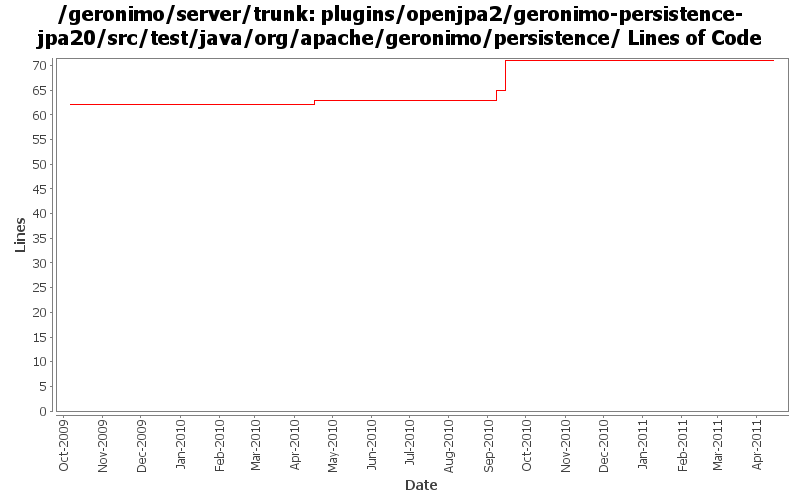

[root]/plugins/openjpa2/geronimo-persistence-jpa20/src/test/java/org/apache/geronimo/persistence
 mockjpa
(2 files, 344 lines)
mockjpa
(2 files, 344 lines)

| Author | Changes | Lines of Code | Lines per Change |
|---|---|---|---|
| Totals | 8 (100.0%) | 24 (100.0%) | 3.0 |
| gawor | 2 (25.0%) | 12 (50.0%) | 6.0 |
| djencks | 1 (12.5%) | 7 (29.2%) | 7.0 |
| vamsic007 | 1 (12.5%) | 2 (8.3%) | 2.0 |
| dwoods | 3 (37.5%) | 2 (8.3%) | 0.6 |
| kevan | 1 (12.5%) | 1 (4.2%) | 1.0 |
Fix unit test failures caused by revision number 1091414
1 lines of code changed in 1 file:
fix build break
1 lines of code changed in 1 file:
GERONIMO-5606: An attempt to generate a proper persistenceUnitRoot for a PU. The PU relies on BundleResourceClassLoader which returns 'jar' urls for resources embedded in jars.
11 lines of code changed in 1 file:
GERONIMO-5226 Pass container ValidationFactory to the persistance manager when creating an entity manager.
o Hook the BValModuleBuilderExtension to openejb deployer.
o Add ValidatorFactoryGBean as a parameter to PersistenceUnitGBean constructor.
2 lines of code changed in 1 file:
GERONINMO-4680 slightly osgi-ify PersistenceUnitInfo, at least eliminating an NPE
7 lines of code changed in 1 file:
GERONIMO-4680 Upgrade to OpenJPA-2.0.0-beta which passed the JPA 2.0 TCK
2 lines of code changed in 1 file:
finished adding unimplemented JPA2 methods
0 lines of code changed in 2 files: